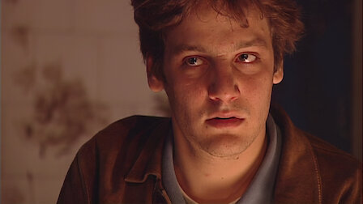
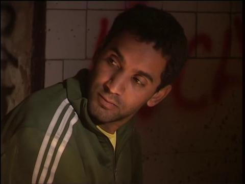
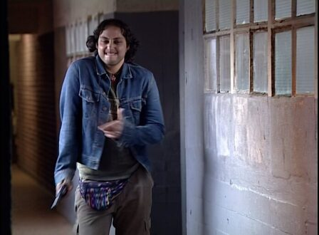
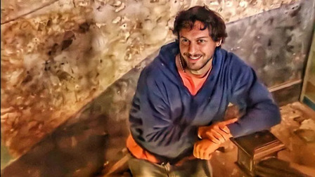
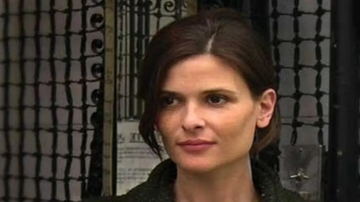
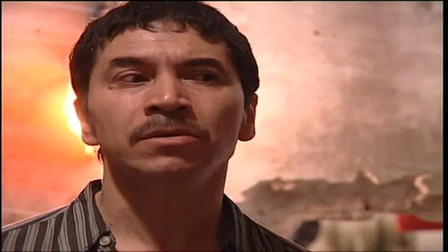
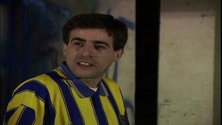
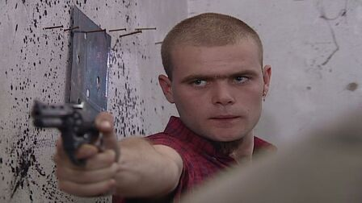

Es un joven universitario de clase media-alta, que ha abandonado su carrera y al comienzo de la serie
está viviendo en la casa de su abuela, sin trabajar ni estudiar. Su prima, Clara, le ofrece un techo a
cambio de proteger una casa que está en trámites de sucesión y acaba de ser desalojada. Durante la
miniserie, Ricardo comienza un espiral hacia la vagancia y la vida en la calle, aprendiendo primero los
códigos «okupas», y luego los del robo y el manejo de armas.

Sergio "El Pollo" (Diego Alonso)

Es un viejo amigo de la escuela primaria de Ricardo, del cual se desconoce exactamente el origen de su
vínculo, ya que pertenece a una clase social mucho más humilde y marginal. Al comienzo de la historia
comparte un departamento alquilado con varios amigos. Proviene del mundo de la delincuencia, y su
compañero y socio es el Negro Pablo. El Pollo introduce a Ricardo en el mundo okupa y va enseñándole los
códigos para manejarse en su nueva vida.
Walter (Ariel Staltari)
Es un paseador de perros rolinga (por ende fanático de The Rolling Stones) y amante de los animales.
Aunque suele ser fanfarrón y provocador, es también un vago que disfruta no haciendo nada y se agota
fácilmente cuando se le exige trabajar. Adopta a un perro al que llama Severino (por el anarquista
Severino Di Giovanni).

El "Chiqui" (Franco Tirri)

Es un bonachón de personalidad inmadura, inocente y algo perdido. Amigo del Pollo, aparece en la
historia viviendo en la calle, al pedirle monedas a Ricardo en varias oportunidades. Cultiva marihuana
en la casa tomada y suele tomarse los problemas con más calma que sus amigos, siempre buscando la parte
buena de los hechos y rara vez enojándose. Su apodo "chiqui" viene de que antes trabajaba en un local de
comidas llamado "El Chiquilín".
Clara Alvarado (Ana Celentano)
Es la prima de Ricardo y propietaria legal de la casa ocupada, en ese momento en trámites de sucesión.
Impone a Ricardo una serie de “mandamientos” para dejarle instalarse en su propiedad, pero rápidamente
es desbordada por la situación. Es licenciada en marketing y está de novia, y a pesar de ello comienza
un romance con el Pollo, manteniendo una doble vida. Aunque inicialmente impone sus reglas a Ricardo,
poco a poco pierde poder, y termina confrontando legalmente con él.

Peralta (Augusto Britez)

Es el vecino paraguayo de Ricardo y sus amigos, y vive de la construcción y de diversas “changas” para
mantenerse con lo justo. Es entrador y simpático, evitando a toda costa la confrontación y la agresión,
haciendo uso constante de la ironía y el humor ácido. Al comienzo de la serie, su relación con el grupo
de Ricardo es mala, ya que él pretende apropiarse de la casa ocupada. Pero luego de ser amenazado por el
Pollo cede y pasa a buscar un mejor vínculo con el grupo protagonista.
El Negro Pablo (Dante Mastropierro)
Es un lumpen, okupa, dealer y criminal, socio y amigo conflictivo del Pollo. Al comienzo de la serie
comparte un departamento con él en las torres de Dock Sud, pero tienen una pelea por la falta de códigos
del Negro, que ha estado ingresando a demasiados amigos nuevos a la casa. Violento, provocador y
vengativo, se ensaña con Ricardo luego de quedarse resentido con el Pollo, y el conflicto con el
protagonista termina volviéndose central en la trama.

Miguel (Jorge Sesán)

Surge en la mitad de la historia, cuando aparece súbitamente en la casa de Ricardo. Dice haber sido
anterior inquilino de la propiedad, y lo demuestra descubriendo un arsenal que escondía en su vieja
habitación. Más atrevido y violento que el Pollo, termina imponiéndosele como amigo de Ricardo y ganando
poder en la casa, primero a base de violencia y amenazas, y luego ganándose a Ricardo. A diferencia del
Pollo, que pretende mantener a Ricardo fuera del mundo delictivo, Miguel le enseña a manejar armas de
fuego y a asaltar, y lo introduce en los códigos de la delincuencia.